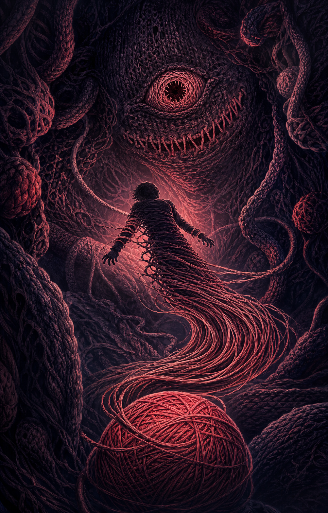

TANGLED / BAD END
あなたは、糸になった
「つぎは、あなたをほどく番」
escape-safari / KNIT
目を開けると、身体は巨大な編み目の内側にあった。
イトヌシは、古い記憶の上へ新しい糸を縫い重ねている。
機嫌を損ねれば、あなたも一本の糸にされる。
UNRAVELED
出口につながる糸端が、ふっと緩んだ。

TANGLED / BAD END
「つぎは、あなたをほどく番」
怒ったイトヌシが身体を細く引きのばす。
声も指もほどけ、毛玉の奥へ巻き取られていく。